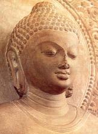

Explanation of the DiscourseVerse 1: May All Deities Listen AttentivelyDeities are similar to wealthy people — they are so busy indulging in pleasures that most of them have little time for the ardent practice of the Dhamma. Venerable Moggallāna sometimes visited the celestial realms, to stir up the deities who were being heedless. The discourse therefore begins by requesting the deities to pay attention to the words of the Buddha. Those deities who are good Buddhists will pay respectful attention when virtuous monks or lay Buddhists recite the holy stanzas. If one begins by practising loving-kindness, beings will be more inclined to pay attention. Verse 2: Request to Deities to be HeedfulThe second verse asks all the deities to radiate loving-kindness towards mankind, and to protect them with earnestness. If people are virtuous, practise loving-kindness, and are respectful towards others, it is only natural that good people will reciprocate in a similar fashion. This verse therefore respectfully requests the deities to have love and compassion for human beings who daily make offerings to them. In Buddhist countries, people often set up shrines to deities, and make offerings of food, flowers, or incense morning and evening. Modern town-dwelling folk may not understand the value of this practice, but if they read the Buddha’s discourses they will realise how often the deities are mentioned. The deities used to visit the Buddha every night to discuss the Dhamma, but they do not like to
approach most human beings, because ordinary human beings seem noisy, dirty, and gross to them. A shrine should be in a suitable place and kept clean. After bathing, pious Buddhists make offerings to the Buddha, practise meditation, and recite some discourses and verses. The deities will always protect pious people who honour the Buddha in this way. Verse 3: The Buddha is Incomparable
The third verse states that there is no deity or human being comparable to the Buddha. Whatever gives joy and delight is regarded as a precious treasure. Whatever is exceedingly rare and beautiful is a jewel. In Burma, men refer to a good wife as “A genuine ruby.” A genuine ruby is very hard to find among so many other stones. It does not lose its lustre, even if dropped in the dirt; it is
hard-wearing and does not get scratched easily; it is not easily destroyed even by fire. A good wife who puts up with an ill-tempered husband is a genuine ruby, and equally precious. No-one has as much patience as the Buddha, who showed unlimited compassion, even when abused and mistreated, by teaching the sublime Dhamma that could save wicked people from hell. He tolerated evil-minded monks
like Sunakkhatta and Devadatta, and did everything in his power to reform them. Verse 4: Nibbāna is the Supreme BlissThis verse shows the special quality of nibbāna. Because it is not born, nibbāna is not subject to impermanence, decay, and death. Being
unconditioned, it is far superior to any other kind of pleasure or bliss. Everyone tries their best to find happiness in all kinds of sensual pleasures. One might think that a millionaire would have the greatest happiness possible, but if one were to wake up a millionaire who was sleeping soundly, so that he could enjoy pleasures again, he might be angry. For him at that moment, sleeping
soundly is far superior to enjoying sensual pleasures. Sound sleep is the highest bliss that can be enjoyed by ordinary people. The Noble Ones can enjoy nibbāna, which is far superior. While enjoying nibbāna, they are not asleep — they are fully conscious, but the mind is perfectly at rest, like the mind of the sleeping millionaire who is not even dreaming. The Sage of the Sakyans means the Buddha Gotama.
Verse 5: The Path Gives Instant BenefitsHere, the special qualities of the Noble Eightfold Path are shown. One who strives hard in insight meditation must suffer physically and mentally to abandon the five hindrances and gain deep concentration. One may gain and lose
concentration many times, and experience mental anguish due to the stubbornness of the untrained mind. However, on attaining the Path, all those struggles are in the past, and the ardent meditator immediately experiences the bliss of Fruition. The first time a meditator attains nibbāna, the Path consciousness is only momentary, and only two or three moments of Fruition consciousness arise, so the experience is very brief and subtle. Some may not know what the experience was. Many may mistake
some other refined delight experienced in meditation for the Path and its Fruition. The point is that if one practises the Path, the benefits follow at once. Even before attaining nibbāna, the ardent meditator can enjoy many benefits such as non-remorse, joy, confidence, and contentment. One does not have to wait until after death for the results — they follow immediately in proportion
to the effort that one puts into the practice. It is like picking wild fruits — one can eat as much as one wishes, and carry some home to eat later. If one knows where to find them, wild fruits are very delicious, and also completely free! Verse 6: Noble Ones Are Worthy of OfferingsThere are four stages of the Path — Stream-winning, Once-returning, Non-returning, and Arahantship. These four paths also have four fruits. Thus there are four pairs of persons or eight individuals. The benefit of offerings made to individuals increases according to their spiritual development. It is noteworthy that the Discourse on the Analysis of Offerings1 makes no distinction between monks and nuns, or between those gone forth and householders. The benefit of gifts to individuals depends solely on their moral purity and spiritual powers — confidence, effort, mindfulness, concentration, and wisdom. If anyone is trying hard to meditate, which means they are striving to remove mental defilements, then they are worthy of offerings, and gifts to them bear abundant fruit. If they have attained special insights, then the fruits of offerings to them are special too.
To be worthy of offerings, a monk must be free from craving. If he is avaricious, donors will not find delight in giving to him. The training rules prohibit a monk from asking for anything from anyone unless invited to accept. “He is not called a bhikkhu because he begs from others.
By following the entire training he becomes a bhikkhu,
and not by such begging.” (Dhp v 266)
Verse 7: Arahants Have No Mental SufferingThis verse emphasises the special qualities of the Arahant. Being fully accomplished in morality, concentration, and wisdom the Arahant can enjoy the priceless bliss of nibbāna. Even Stream-winners and Once-returners have to suffer due to attachment to sensual pleasures. Non-returners have no lust or anger, but they still experience mental suffering such as restlessness. The suffering of Arahants is limited to physical hardship
only. They feel cold and heat, hunger and thirst, bodily discomfort and physical pain, but they do not suffer mentally. In the Mahāparinibbāna Sutta the Buddha said that his body is worn out and is kept going only with difficulty, and the only time his body is at ease is when he abides in the signless concentration of mind. To avoid physical discomfort and to dwell at ease, the Arahants
meditate whenever there is nothing else to be done, such as Sangha business, training pupils, or teaching Dhamma. If they have no desire, why do the Arahants bother to eat? Why don’t they just fast to death and get free from suffering as soon as possible? That would amount to aversion to the daily hardships of life such as searching for food, clothing, and shelter. The Arahants are free
from aversion and laziness, so they do what they must to maintain life, but have no attachment to life at all. Verse 8: Having Stable MoralityHere, the Stream-winner is compared to a city gate-post. A huge post of stone or hardwood sunk deeply into the ground would
not topple or break even if struck by a heavily-laden bullock cart, so how could the wind move it? Though he or she still has something to learn, a Stream-winner has rightly understood the Four Noble Truths so has attained stability in the Buddha’s teaching. The confidence of a Stream-winner in the Triple Gem never wavers, so they never look for other teachers. Their morality is stable too — a Stream-winner will never violate the precepts even on pain of death. Because they still have some attachment to sensual pleasures, they may suffer sorrow and grief just like other people, but they will always be devout Buddhists. Verse 9: Not Reborn an Eighth TimeThis
is a special quality of Stream-winners. One who has understood the truth taught by the one endowed with profound wisdom (the Buddha) can never be totally heedless again. At most, they will take rebirth seven more times before attaining Arahantship. They are so well established in the practice of the Path that they inevitably progress from day to day, and from life to life. Verse 10: Free from Doubt
Furthermore, the Stream-winner has abandoned three things: self-view, doubt, and attachment to rites and ceremonies. Due to stable morality, a Stream-winner cannot be reborn in the four lower realms, and is incapable of committing any of the six heinous crimes.2 Self-view means egoism — the belief in the existence of a so-called person or being, a self or a soul, me or you. The insight of the first path totally eradicates this deluded way of perceiving the mental and physical processes, which are ever-changing, as a stable entity. Doubt means scepticism about the Dhamma taught by the Buddha. Having realised nibbāna, the Stream-winner is fully convinced of the Buddha’s enlightenment, the truth of the Dhamma, and the special virtues of the Noble Ones. Attachment to rites and ceremonies means that one takes refuge in rituals instead of practising
morality, concentration, and wisdom. Since a Stream-winner knows the right path of practice to get free from suffering, he or she will not look for any other kind of refuge from suffering. They will not bathe in ‘holy’ rivers or follow pseudo-religious practices that have nothing to do with purifying the mind, but they will be keen meditators. The four states of misery are: animal
rebirth, hungry ghosts, jealous gods, and hell. A Stream-winner is only reborn as a human being, deva, or brahma in any future existences until the attainment of parinibbāna. Verse 11: Scrupulous IntegrityAnother special quality of a Stream-winner is transparent
honesty and scrupulous integrity. Although they are not yet free from greed, hatred, and delusion, Stream-winners are completely free from immorality. A monk who is a Stream-winner may sometimes fall into offences due to heedlessness, but when reminded that such an action is an offence against a training rule laid down by the Buddha, or realising this by himself on reflection, he does not conceal it, but makes amends in the prescribed way. One who wishes to attain Stream-winning should be
equally scrupulous, seeing fear in the slightest fault. For example: to eat after midday is an offence for a bhikkhu. Each mouthful taken is an offence to be confessed (pācittiya). If he thinks it is before midday when it is not, it is still an offence. If it is before midday, but he thinks it is after midday, or he is doubtful, it is an offence of wrong-doing (dukkata). A Stream-winner would not take a single morsel of food if he thought it was after midday, as to do so would be shameless. Due to unmindfulness he might do so, but afterwards he would confess his offence. Stream-winners have a keen desire to follow the training rules and readily confess their offences if they do fall into any — they are not disobedient.
Verse 12: Dhamma Leads to ArahantshipAlthough a Stream-winner is free from the lower realms, he or she should not be complacent. Although the terrible suffering of rebirth in the lower realms has been destroyed, any kind of life is inextricably bound up with suffering.
Even deities suffer from envy and unfulfilled desires. The Sakkapañha Sutta mentions a certain celestial minstrel (gandhabba) who composed songs in praise of the Buddha, Dhamma, and Sangha, and thus gained permission for Sakka to question the Buddha. As a reward, Sakka allowed him to get the female deity he longed for. His song tells of his unrequited love, so even celestial beings suffer from much the same mental anguish as human beings do.
Verse 13: The Buddha is ExcellentThis verse praises the excellence of the Buddha who has left us his excellent teaching out of compassion. Having struggled for aeons to gain the perfection of wisdom, he enables others to gain the same liberation from suffering much more
easily and quickly than he did. As an explorer finds an oasis in the desert, and afterwards with great compassion guides others along that hazardous path directly to the oasis, so that they can enjoy the cool shade and life-giving water it provides, not content with enjoying the oasis by himself, the Buddha laid down signposts and helped anyone he met to find the excellent path to nibbāna.
Verse 14: The Arahants Are Not RebornAll living beings are strongly attached to life, and take delight in it as long as happiness lasts. Even when terrible suffering comes, they think that existence is better than non-existence, and are very much afraid of death. They are
always doing kamma by body, speech, and mind — mostly with a view to enjoying pleasure and happiness. Due to these volitional actions, rebirth is inevitable for them. Their wholesome kamma will lead to happiness, but their unwholesome kamma will lead to suffering. As for the the Arahants and the Buddhas, they have utterly put an end to kamma that would lead to rebirth. Any kamma they did
before gaining Arahantship will give its results in their final existence. They cling to nothing whatsoever, so they are not born again. Since they are not born again, they never again have to undergo the suffering of birth, aging, disease, and death. When asked, “Does the Tathāgata exist after death” the Buddha replied, “The question does not apply.” When asked, “Does the
Tathāgata not exist after death” the Buddha replied, “The question does not apply.” If a candle flame goes out and we ask, “Where did it go — did it go to the East, or to the West? Did it go up into the sky, or down into the earth.” The answer is that the question does not apply. The flame did not go anywhere, it just went out. Nibbāna is not like heaven, nor is it the annihilation of a being. It is the annihilation of the suffering caused by craving and ignorance. Belief in a continuous being or person, a self or a soul, is the reason why some people ask this question, which has no direct answer. If one rightly understands that the so-called self is just an illusion, then one won’t need to ask, “What happens to the Buddha and the Arahants after their
parinibbāna?” Various erroneous doctrines have arisen since the Buddha’s time. Some schools of Buddhism posit a special realm inhabited by Buddhas and Bodhisattas. Allegedly, they emanate physical forms into this world of form to teach the Dhamma out of compassion for humanity. The Dalai Lama is said to be the emanation form of the Bodhisattva of Great Compassion — Chenrezi (Avalokateshvara). Such teachings are incompatible with the Buddha’s teaching on not-self and rebirth. These ideas are very
similar to the ideas of God in other religions. They only go to prove how strong is the clinging of living beings to the idea of a self or a soul, a person or a being. However, this idea is just a delusion arising from misperceptions of permanence in what is impermanent. Such ideas are readily accepted by the ignorant who have neither scriptural learning nor deep experiences in meditation. Ignorance is perpetuated from one generation to the next. The cycle of ignorance and craving leading to
suffering is the wheel of Dependent Origination, or samsāra, which, being circular, has no beginning and no end. The cessation of suffering can be realised by eradicating ignorance and craving. The Stream-winners are sure to attain the end of suffering within a limited number of lives, because the root cause of self-view has been eradicated by them, and it is only a matter of time before
any remaining craving and ignorance are rooted out. The UnbornThus have I heard: At one time the Blessed One was dwelling at Sāvatthī in the Jeta Grove, Anāthapindika’s monastery. Then on one occasion the Blessed One taught, instructed, roused, and
gladdened the monks with talk on nibbāna. Having made the minds of the monks pliable and ready to listen to the Dhamma, the Blessed One uttered the following solemn statement: “There is, monks, the unborn, unbecome, uncreated, and unconditioned. If there were not the unborn, unbecome, uncreated, and unconditioned, it would not be possible to point out the born, become, created, and
conditioned. Because, monks, there is the unborn, unbecome, unmade, and unconditioned, therefore the refuge from the born, become, created, and conditioned can be pointed out.” (Udāna)
Verses 15 – 17: Salutation to the Triple GemThe Ratana Sutta concludes by inviting all beings present — terrestrial and celestial — to pay homage to the Buddha, Dhamma, and Sangha. “The Sangha” means the Noble Ones (ariyasangha) whether monks, nuns, or lay disciples. The Commentary, says that these last three verses were recited by Sakka, the king of Tāvatimsa. When Buddhists pay homage to bhikkhus, novices, or nuns, they always bow three times. When they do this, they should reflect: “I pay homage to the Omniscient Buddha, I pay homage to the excellent Dhamma, and I pay homage to the Noble Ones.” The bhikkhus, novices, or nuns may or may not be Noble Ones. They are often just ordinary monastics with no special attainments. However, because they are wearing the robes permitted by the
Buddha, and are ordained according to the Vinaya rules laid down by the Buddha, they are representatives of the true Buddha, the true Dhamma, and the true Sangha. A devotee can therefore get great benefit if his or her mind is focused on the Triple Gem. Even an old or badly damaged stone statue of the Buddha, or a photograph of an image should be treated with respect because it serves as a
reminder of the Triple Gem, which is definitely worthy of homage. We pay homage to what it represents — the Triple Gem — not the image or statue, which is only stone, wood, or paper. If non-Buddhists fail to show respect to an image of the Buddha, or even if they show disrespect by destroying it, Buddhists should not get upset. Any unwholesome kamma was done only by the perpetrators, and
only they will get the results. The statue is just stone. What it represents to us is not damaged in the least by the actions of others. If Buddhists do get upset and angry on seeing such disrespect shown to the Triple Gem, they will make unwholesome kamma. It is because they have not rightly understood about the true Buddha, the true Dhamma, and the true Sangha, but are attached to a piece of stone, or at least to a misconception that they hold regarding the sacredness of that piece of
stone. Similarly, lay Buddhists should dismiss unwholesome fault-finding thoughts regarding the imperfect morality of monks, novices, or nuns. Such unskillful thoughts would greatly diminish the effectiveness of paying homage. One should purify the mind while performing meritorious deeds. All beings are the owners of their kamma and will inherit its results. If the mind is defiled and
distracted at the time of offering gifts or paying homage, the kamma will be much less effective. The recipients should also purify their minds at the time of accepting gifts or homage. The gifts and homage are offered to the Noble Sangha, not to any individual. If a monastic fails to reflect wisely, he or she is incurring a debt that will have to be paid off later. Having misused the
offerings of the faithful, shameless monks will have to repay the debt for many lifetimes. When making use of the gifts offered by the faithful, monks and nuns should reflect wisely, and work tirelessly for the benefit of society by studying, preserving, teaching, explaining, and practising the Buddha’s teaching. It is largely due to the efforts of the Sangha that the Buddha’s teachings
have lasted as long as they have. Each generation of monks and nuns has a duty to revive, purify, and reinvigorate these ancient teachings so that they will remain pure for the benefit of future generations. The Vinaya rules laid down by the Buddha have been rightly described as the vitality of the Buddha’s dispensation (Vinayo nāma sāsanassa āyu).³ As long as the Vinaya rules are respected by the Sangha, then the Buddha’s teaching will remain pure. Without the monastic Sangha, there will be no Vinaya discipline, and the Buddha’s teachings will very soon disappear from the world.
Nowadays, many Buddhist parents are reluctant to let their sons join the Saṅgha. They want them to be doctors, but it is far more important to heal the mind than the body. Buddha Images“Images and pictures of the Buddha are just imitations of the physique of the Buddha. “Images, pictures, and pagodas conceal the real Buddha; sermons conceal
the real Dhamma; shameless monks conceal the real Sangha. “Burmese sculptors make Buddha’s images in Burmese style; likewise Chinese and Indian sculptors carve in their own styles. The real intention is to make people think of the Buddha and adore him even more. “The laity will respect the Buddha’s dispensation only if the monks respect it
, and if all Buddhists respect it, non-Buddhists will respect it. “Foreigners and modern young intellectuals will hold in contempt Buddhist monks who do not behave properly and live loosely. Devotees will also lose confidence in them. The monks will suffer from disgrace, and when they die they will go to hell. “The female quail risks her life to guard her eggs. The mythical samari bird guards its feathers with its life. We Buddhist monks should maintain our moral precepts at the risk of our lives. “You, monks! If you can teach, and if you are weak in morality, you will be like a tree that does not
bear sweet fruit. If you are good at preaching but cannot properly keep the precepts, you will be like the flowers with no fragrance. “Monks, if you receive alms from others and live the life of an average good person, you are not doing your duty satisfactorily.” (Mahāgandhayon Sayādaw).4 The Sayādaw was responsible for training thousands of young monks in the Dhamma and Vinaya. He admonished them as above and maintained strict discipline in his monastery. Any monks guilty of wandering off into town without permission were sent away from his monastery. My own preceptor, the late Venerable Mahāsī Sayādaw, was also strict, and regularly admonished his disciples to behave well. During his life-time no bhikkhus were permitted to accept money in his meditation centre. Any monks who were found to be accepting money were sent away. The Value of the Triple Gem
Gems are very precious due to their great rarity. A pink diamond was recently sold at Sotheby’s for £29 million. Anyone could live quite comfortably for the whole life with that much wealth. If you understand about the value of the true Buddha, the true Dhamma, and the true Saṅgha, then
you can live comfortably for the whole life. Wholesome volition (kusala kamma), arises in the mind, and no matter where you are the mind goes with you. Merely by thinking in a skilful way and reflecting on the above-mentioned special qualities of the Triple Gem, one has a way of accumulating boundless wholesome kamma. Therefore, memorize this Ratana Sutta, and recite it regularly in Pāḷi while reflecting on the meaning as
explained in this short booklet. Even if you are living in a place where there is are no monks or nuns to invite for alms, you can keep this precious gem discourse in your heart to reflect on at any time. No external robbers can steal this gem from you, but we wary of the internal robbers — the mental
defilements of greed, hatred, and delusion. Only these internal robbers can steal your morality, serenity, and wisdom. |